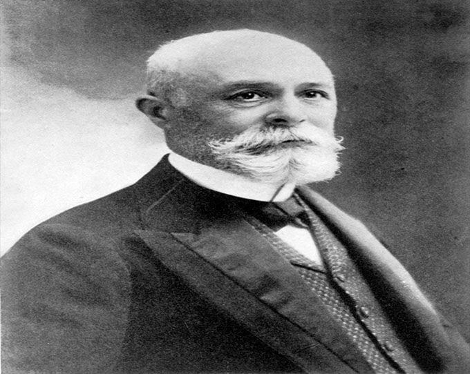
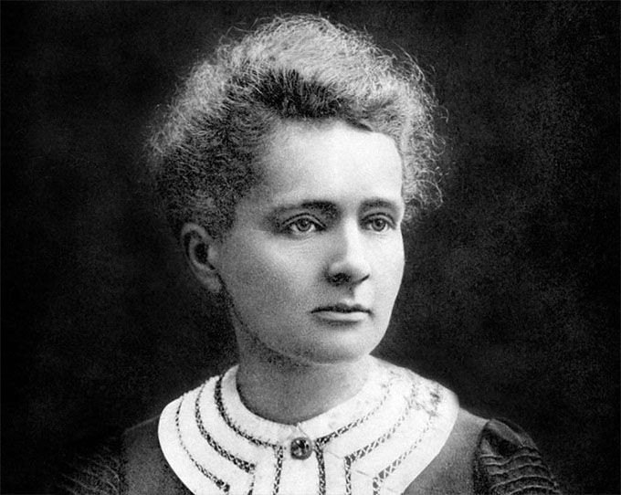
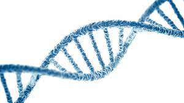

Боровская модель атома
Планетарная модель атома, предложенная Резерфордом, – это попытка применения классических представлений о движении тел к явлениям атомных масштабов.
Она оказалась несостоятельной. Классический атом неустойчив.
Электроны, движущиеся по орбите с ускорением, должны неизбежно упасть на ядро, растратив всю энергию на излучение электромагнитных волн
Следующий шаг в развитии представлений об устройстве атома в 1913 году сделал выдающийся датский физик Н. Бор. Проанализировав всю
совокупность опытных фактов, Бор пришел к выводу, что при описании поведения атомных систем следует отказаться
от многих представлений классической физики. Он сформулировал постулаты, которым должна удовлетворять новая теория о строении атомов.
Модель Бора, предполагающая, что электроны движутся вокруг атомного ядра подобно планетам, обращающимся вокруг звезды,
позволила объяснить химические и оптические свойства атомов.
В 1922 году за эту работу Нильс Бор был награжден Нобелевской премией.
Атом (Фото: Bedrin, Shutterstock)
Радиоактивность была открыта в 1896 году французским физиком
А. Беккерелем. Он занимался исследованием связи люминесценции и недавно открытых рентгеновских лучей.
Беккерелю пришла в голову мысль: не сопровождается ли всякая люминесценция рентгеновскими лучами?
Для проверки своей догадки он взял несколько соединений, в том числе одну из солей урана, фосфоресцирующую жёлто-зелёным светом.
Осветив её солнечным светом, он завернул соль в чёрную бумагу и положил в тёмном шкафу на фотопластинку, тоже завёрнутую в чёрную бумагу.
Через некоторое время, проявив пластинку, Беккерель действительно увидел изображение куска соли. Но люминесцентное излучение не могло пройти
через чёрную бумагу,
и только рентгеновские лучи могли в этих условиях засветить пластинку. Беккерель повторил опыт несколько раз и с одинаковым успехом
Впоследствии Беккерель испытал и другие соединения и минералы урана (в том числе не проявляющие фосфоресценции),
а также металлический уран. Пластинка неизменно засвечивалась. Поместив между солью и пластинкой металлический крестик,
Беккерель получил слабые контуры крестика на пластинке. Тогда стало ясно, что открыты новые лучи, проходящие сквозь непрозрачные предметы,
но не являющиеся рентгеновскими.
Своим открытием Беккерель делится с учёными, с которыми он сотрудничал. В 1898 г.
Мария Кюри и Пьер Кюри обнаружили радиоактивность тория, позднее ими были открыты радиоактивные элементы полоний и радий.
Они выяснили, что свойством естественной радиоактивности обладают все соединения урана и в наибольшей степени сам уран.
Беккерель же вернулся к интересующим его люминофорам. Правда, он сделал ещё одно крупное открытие, относящееся к радиоактивности.
Однажды для публичной лекции Беккерелю понадобилось радиоактивное вещество, он взял его у супругов Кюри и положил пробирку в жилетный карман.
Прочтя лекцию, он вернул радиоактивный препарат владельцам, а на следующий день обнаружил на теле под жилетным карманом покраснение
кожи в форме пробирки. Беккерель рассказал об этом Пьеру Кюри, и тот поставил на себе опыт: в течение десяти часов носил привязанную
к предплечью пробирку с радием. Через несколько дней у него тоже появилось покраснение, перешедшее затем в тяжелейшую язву,
от которой он страдал в течение двух месяцев. Так впервые было открыто биологическое действие радиоактивности.
Но и после этого супруги Кюри мужественно делали своё дело. Достаточно сказать, что Мария Кюри умерла от лучевой болезни в 1934 г.

Антуан Анри Беккерель(1852-1908)

Мария Кюри(1867-1934)
К концу 60-х годов Ф.Сэнгером были разработан метод секвенирования РНК,
получаемой с ДНК-матрицы при помощи РНК-полимеразы. Применив этот способ, Ш.Вейссман и У.Фирс смогли концу 1976 г.
определить последовательность более половины молекулы ДНК SV40, длина которой превышает 5200 нуклеотидных пар.
[1, 2] Следующим шагом должна была стать разработка методов прямого секвенирования ДНК.

В 1976 г. А. Максамом и У. Гилбертом был разработан метод секвенирования, основанный на специфической
химической деградации фрагмента ДНК, радиоактивно меченного с одного конца. Препарат меченной ДНК разделяли на четыре
аликвоты и каждую обрабатывали реагентом, модифицирующим одно или два из четырех оснований. А. Максам и У. Гилберт предложили модифицировать
пуриновые основания диметилсульфатом. При этом происходит метилирование адениновых остатков по азоту в положении 3, а гуаниновых - по азоту в положении 7.
Обработка образца ДНК соляной кислотой при 0°С приводит к выщеплению метиладенина. Последующая инкубация при температуре 90°С в щелочной среде
вызывает разрыв сахарно-фосфатной цепи ДНК в местах выщепления оснований. Обработка пиперидином приводит к гидролизу образца по остаткам метилгуанина.
Пиримидиновые основания модифицируют гидразином. Если реакцию вести в бессолевой среде, то модифицируются как цитозин, так и тимидин; если обработку вести
в присутствии 2М NaCl, то модифицируется лишь цитозин. Расщепление цепи ДНК на фрагменты и в этом случае осуществляется пиперидином. Условия реакций авторы
подбирали таким образом, чтобы в итоге получить полный набор субфрагментов разной длины.
Последующий электрофорез в полиакриламидном геле позволяет восстановить полную структуру исследуемого фрагмента.